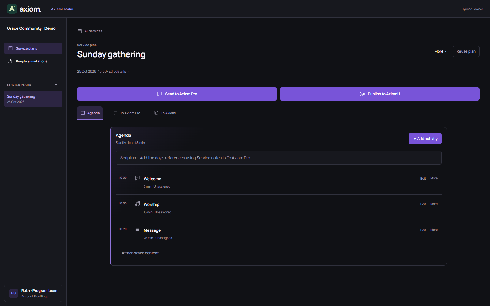

✦ PRESENTATION SOFTWARE FOR MAC & WINDOWS
Create. Present.
Create. Present.
Captivate.
Beautiful presentations. Confident delivery. One desktop app.
✓ Free standalone app · macOS & Windows · No account required

THE WAY IT WORKS
From idea to on screen.
01CreateSlides & media
02OrganiseEverything in order
03PresentPreview & go live


GET AXIOM
Ready to present?
Download free for Mac or Windows.
Try the browser demoLoading the latest desktop release…
✦ EXPLORE AXIOM
See Axiom in action.
Follow the journey from creating slides to presenting live.

Plan the moment.
Build a clear service agenda with AxiomLeader before Sunday begins.